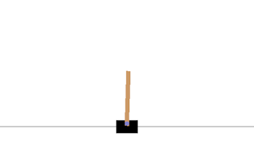

OpenAI, Çubuklu Araba, CartPole
Kontrol Problemleri
Gym sadece görsel çıktıyla sınırlı değil, mesela sadece alttan tutarak dik tutmaya uğraştığımız bir çubuğu düşünelim, bunu belki çocukken yapmışızdır, ağır olan dik bir cismi parmak üzerinde tutmaya uğraşmak. Tabii sağa sola giderek dengelemeye uğraşılır, oldukca zor bir iştir, vs. Gym içinde bu ortam da var,
import gym, time
import numpy as np
env = gym.make("CartPole-v0")
env.reset()
obs, reward, done, info = env.step(0)
print obs
print obs.shape
env.render()
deyince alttaki resim çıkar,
Fakat aslında step çağrıları bize Pong'da olduğu gibi resim değil, çubuk hakkında 4 tane parametre donduruyor, render çağrısı bu parametreleri kullanarak bir temsili resim ortaya çıkartmış. Üstteki durum için parametreler
[ 0.02585672 -0.17299761 0.030009 0.29081285]
Parametrelerin ne olduğunun detayı şurada. Soldan 3. çubuğun duruş açısı, -45 ile +45 arasında, artı açılar sağa doğru yatik demek, eksiler sola doğru.
Eğer çubuğu dengede tutmayı öğrenmek istersek step ile alt kısmı sağa ya da sola kaydırabiliriz, çubuk sola düşecek gibi olsa mesela sola gidip dengeyi tekrar bulmaya uğraşırız, vs. Sistem bize hangi durumda olduğunu üstteki 4 sayıyla söyler. Bu yeterli, Pong ile olduğu gibi tüm ekranı görmemize gerek yok. Mükafat (ya da ceza) başarılı geçen her adım için verilir, oyun eğer çubuk belli bir açıdan fazla yatiksa biter, o zaman çubuk "düşmüş" demektir. Ekran dışına çıkmak aynı şekilde oyunu bitirir.
CartPole kontrol problemlerini anlamak açısından faydalı bir örnek. Kontrol Mühendisliği'nde bu tür durumlar yoğun şekilde görülür.
Her gözlenen parametrenin kabul edilir değer aralıklarını ekrana basalım,
print(env.observation_space.high)
print(env.observation_space.low)
Sonuc
[4.8000002e+00 3.4028235e+38 4.1887903e-01 3.4028235e+38]
[-4.8000002e+00 -3.4028235e+38 -4.1887903e-01 -3.4028235e+38]
Rasgele şekilde CartPole oynayan ve çıktıları her 10 adımda bir /tmp
altına resim olarak kaydeden bir kod
import matplotlib.animation as animation
import gym, six
import pandas as pd
import numpy as np
import matplotlib.pyplot as plt
env = gym.make('CartPole-v0')
observation = env.reset()
rewards = 0
for t in range(500):
action = env.action_space.sample()
img = env.render(mode='rgb_array')
if t%10 == 0:
plt.imshow(img)
plt.savefig('/tmp/cart-%d' % t)
print (img.shape)
observation, reward, done, info = env.step(action)
print (observation)
print(env.observation_space.high)
print(env.observation_space.low)
env.close()
Alternatif bir yöntem (üstte yerine koyun)
import pyglet
...
...
env.render()
buffer = pyglet.image.get_buffer_manager().get_color_buffer()
image_data = buffer.get_image_data()
if t % 10 == 0:
image_data.save(filename='/tmp/car-%04d.png' % t)
